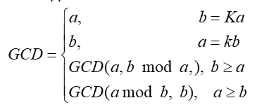

Мета: Сформувати декларативне мислення в галузі програмування завдяки використанню чистих функцій, рекурсій замість циклів, запобіганню даних, що змінюються. Опанувати застосування рекурсивних функцій для обчислювальних процесів.
Вибір середовища та мови функціонального програмування
В якості мови програмування була обрана Haskell, оскільки в ньому оптимально поєднанні імперативні і функціональні парадигми а також, легко будувати абстракції над даними і алгоритмами, що дозволяє думати про завдання, не відволікаючись на дрібниці. Середовищем було обрано Compile and Execute Haskell Online (Glorious Glasgow, v8.0.2)
Ввести з клавіатури два натуральних числа m та n. Знайти їх найбільший спільний дільник, застосувавши алгоритм Евкліда (GCD - Greatest Common Divisor) для рекурентного співвідношення:

-- Завдання № 1
gcD a b n =
if (a == 0)
then do
putStrLn ("Result: " ++ "\n"++"Найбільший спільний дільни {" ++ show b ++ "}"++"\n" ++"Глибина рекурсії {" ++ show n ++"}" ++ "\n")
else do
gcD (b `mod` a) a (n + 1)
putStrLn ("Your: " ++ show b ++ " " ++ show n )
main = gcD 7 41 0
Увести з клавіатури натуральне число n. Вивести всі його цифри по одній в зворотному порядку, розділяючи їх пробілами або новими рядками. При розв'язанні цього завдання дозволена тільки рекурсія і цілочислова арифметика. Контрольний тест: введено число 123, отриманий результат: 3 2 1.
-- Завдання № 2
reversenumb tempo numb
| numb == 0 = tempo
| otherwise = reversenumb (tempo++show(numb `mod` 10)++" ") (numb `div` 10)
main = do
let numb = 123
putStrLn("Bведено число " ++ show(numb))
putStrLn("Отриманий результат " ++ reversenumb "" numb)
У ході виконання даної лабораторної роботи було опановано застосування рекурсивних функцій для обчислювальних процесів.